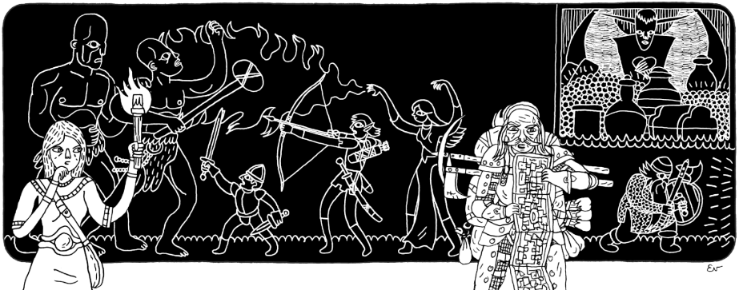
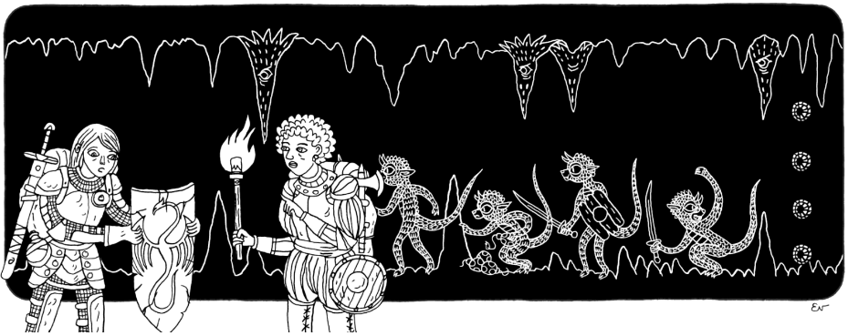

Principia Apocrypha¶
Elementary Axioms & Aphorisms on Running & Playing Tabletop RPGs in the Old School Style¶
From Ben Milton (Maze Rats) & Steve Lumpkin (Roll 1d100)
Introduction¶
This booklet is based on advices and notes taken from Milton's Maze Rats Rules-light RPG game, and Lumpkin's Roll 1d100 blog.
What is Old School Style Play?¶
Based on Milton description:
The more of the following a campaign has, the more old school it is: high lethality, an open world, a lack of pre-written plot, an emphasis on creative problem solving, an exploration-centered reward system (usually XP for treasure), a disregard for "encounter balance", and the use of random tables to generate world elements that surprise both players and referees. Also, a strong do-it-yourself attitude and a willingness to share your work and use the creativity of others in your game
You can find more guides, introductions to OSR, further readings and recommendations here.
Using the principles¶
Take the principles as guiding remarks rather than stone-written rules. Adapt to your game and feel free to break them as you seem fit. Every group is unique. Use these rules to guide you when you feel lost.
Your Table is Yours¶
Be an Impartial Arbiter¶

Ruling over Rules¶
The primeval old school principle. Old school style games are often sparse in what situations their rules cover. There are often minimal, or no "skills" or "feats". This is a feature, not a bug. Let players take advantage of this openness and try crazy things (and apply logic to taste).
When you encounter a situation that the rules don't seem to cover, don't get distracted searching for it. Instead, make a common-sense ruling within the spirit of the game and move on. It doesn't have to be perfect. Later, if there is a rule for it, tag it, and if not, make a note of the ruling and apply it consistently.
Divest Yourself of Their Fate¶
As GM (or, more appropriately, the Referee), you are not an antagonist to the players or characters. Nor are you an author writing their story. Portray the world and embody its denizens genuinely, as they would react to characters' behaviors. Don't set out to tell a story, let one emerge from the characters' interactions with the world.
Be fair and impartial. Do not fudge rolls and avoid rolling in secret. This keeps the game honest and dangerous, and prevents any accusations of favoritism or railroading. It also encourages the players to manipulate and engage with the fictional world, rather than with the GM.
Leave Preparation Flexible¶
Don't prepare a plot for the players to follow. During the game, observe how the players deal with a situation, and extrapolate the effects of their actions based on what you know. Don't plan the results too far ahead of time; players rarely do what you expect them to.
Don't overdo the preparation! Keep your situation ideas loose enough that they can be adapted to the PC's choices and the flow of the game. Remember that unused prep can always be recycled in later sessions.
Build Responsive Situations¶
Establish situations with several actors or factions pursuing their own ends. Let the players' actions affect this environment, and let the consequences affect the players in turn. Show the situations worsening if the players don't address them.
One way to create interesting situations is to draw a grid that maps the relationships between the elements of a situation and how they relate and inretact, or how the party might intervene.
Embrace Chaos...¶
Listen to that capricious muse, the dice. Relying only on your own imagination can become exhausting and predictable, and can feel less like a concrete world to the players. External inspiration and random results help you divest yourself of their fate.
Use random tables to keep the game fresh. The surprising twists that random tables add can bring an energy and mystery to the game that is hard to improvise.
...But Uphold Logic¶
But don't use random results to the extent that the world feels nonsencial. If there is an obvious choice, consequence, or cause, use it. This can help maintain verisimilitude and prevents the events to seem just random. It is ok to customize the random tables to make more sense to your settting.
Let Them Off the Rails¶
Let them know where the main story is supposed to be, but if you expect them to zig, and they zag, go with it and improvise, don't constrain or re-route them. If you don't know what comes next, use random tables. Going with the crazy ideas of your players will let you join the fun and excitement of their chaos.
Get Them Thinking¶

XP For Discovery & Adversity¶
The idea is to give XP based on the treasure that the players acquire and bring to safety. This is a good incentive to exploration, and is considered the "fuel" of the game's engine. Rather than giving XP for killing monsters, this shifts the players' focus to outsmarting the monsters rather than violence, because not always combat is the best way forward (increased danger is also a good incentive).
By adjusting the amount of treasure available, you can contorl the rate of PCs leveling. And you can tailor the focus of your game by adding value to exploring wilderness, saving prisoners, acquiring books, artisanal brewing ingredients, crystallized memories...
Player Ingenuity Over Character Ability¶
Old school PCs are very minimalistic because the character sheet is mostly there for when players make a mistake. Players are not meant to solve problems with die rolls, but with their own ingenuity. Therefore, present them with problems that don't require obscure knowledge, have no simple solution, but have many difficult solutions.
Examples: Cross a moat full of crocodiles. A door in a depp dungeon only opens in sunlight. Retrieve a key from a lake of acid.
Cleverness Rewarded, Not Thwarted¶
Give more importance to clever ways of solving problems than to the "correct and expected use of rules".
Encourage players to think this way, presenting them with situations that are nearly impossible to tackle head on, and strongly reward even slightly creative solutions. [...] Feel free to tell your players that cleverness will get them farther than brute force.
Ask Them How They Do It¶
Encourage players to interrogate the fiction of the environment "manually", asking them to describe the manner in which they interact, rather than eliding their actions via a roll or assumed character ability. You can always grant them a roll for a discovery or insight if they give up.
Let Them Manipulate The World¶
The focus of the game should be on creative problem solving, not brute force, so give players tools to make that appealing. When you give players tools, you give them new ways to engage with the world. Add elements that allow the players to bend the world to their will.
For example: rival factions to manipulate, potions with weirdly specific effects, items that can be combined or repurposed, dungeons with shortcuts and back passages.
Good Items Are Unique Tools¶
Try to get a balance between items that give stat bonus, do crazy and interesting things, but also have downsides to its use.
Don't Mind The Fourth Wall¶
Don't worry much about "metagaming", or the dissonance between what the players know and what their characters know.
Favor the ingenuity of the players over strict personification of their characters.
Build Rocks & Hard Places¶

Offer Tough Choices¶
Make the players weigh risk versus reward. The deeper players go into the wilderness or dungeon, the more perilous things should become. Whether because their resources are running low (food, health, equipment, light, etc.) or because danger builds the longer they linger, keep the players asking if it is worth pushing their luck just a little bit farther. The greatest treasures are always the hardest to reach.
This also applies to combat. Players should always consider if it is worth engaging, rather than just run through killing everything. OSR systems are deadlier and as such make the players think twice before giving the next step forward.
Look for situations where all obvious choices come with a heavy cost. These situations encourage unorthodox solutions and lateral thinking.
Subvert Their Expectations¶
It's inevitable that players will have knowledge about common fantasy elements from pop culture.
Use this knowledge to subvert their expectations by introducing your own unique twists to common monsters, locations and situations.
This encourages players to explore these differences and solve new problems they aren't familiar with.
Build Challenges With Multiple Answers...¶
Avoid singular chokepoints to progress. Give them obvious, equally but with differently- difficult alternatives.
For example, a magically locked iron gate that players have to get past. Give the key to one of the NPCs, hide a potion of Eat Metal in some room. The idea is to create challenges that you know the answer to.
Use these to encourage players to dig into the fiction, and explore. If a challenge is critical for the continuation of the adventure, consider placing a few solutions. Three is a good number.
...And Challenges With No Answer¶
Trust in your players. Let them surprise you and find answers to problems that you couldn't expect, and can't help them with. These can be the most rewarding challenges. These exist to force players to be creative in ways that surprise everyone at the table.
Dice With Death¶

Deadly But Avoidable Combat¶
Combat in old school RPGs is often neither balanced nor fair, and PCs should encounter foes far more powerful and numerous than they are. Players should learn to treat combat like real-world warfare and use ingenuity, preparation and underhanded tactics to rig the results in their favor. Encourage the players to outsmart and outplan their enemies if they want to survive.
Old school dungeons are usually not about being "cleared" of enemies. Dungeons constrain and focus possible actions. This makes it easier for both the players and the GM to identify, reason about, and plan around the problems presented. Potentially deadly combat is a common problem, one which should encourage solving in a variety of ways other than head-on.
Keep Up The Pressure¶
Whether it's through random encounter rolls when time passes, or because the dungeon is filling with sand, or because a PC will die in 10 turns from poison, keep the players desperate and on a clock. Maintain a tension between the desire to explore and loot, and the terror of remaining too long.
If the players repeat attempts at a challenge, such as a lock-picking check, give them a consequence, such as a chance for wandering monsters. Do be sure to let them breathe; back in town, on long trips through the wilderness, or if they find a safe dungeon room. But always consider a chance for trouble.
Let The Dice Kill Them...¶
Remember, the GM is not an antagonist to the players, but their survival is on them.
If the rules and dice say that someone is dead, they're dead. Protecting the PCs from death can result in games that lack tension, and players who only solve problems with brute force.
Unambiguous character death gives weight to both the risks and rewards of play. Character creation is simple and quick in these games for a reason. And don't worry about players not feeling attached to "simple" characters; they will after gaining something to lose.
...But Thelegraph Lethality¶
Give players the chance to think their way around threats and obstacles by telegraphing them ahead of time. No one likes their death to be random chance. When a PIC dies, it should be their falt.
Or at least, they should know why.
The example that Ben Milton gives in a video about OSR is that if a PC should die by a deadly trap, the trap should be telegraphed ahead of time, it should be visible, or at least "hintable", e.g. when opening a door or lock that squeaks unusually.
Be Their World¶

Reveal The Situation¶
Don't hide important information from the players. If the PC could reasonably know something, tell the player and move on. The game is about making decisions, and players can't make good decisions without good information. Assume the characters have common sense, and mention potential danger when it becomes obvious.
Give Them Layers To Peel¶
Create layers of information for the players to peel back and explore. Make things that are noticable from the start, things that become clear at first glance, then information revealed on closer inspection, and how they would get that information. In other words, whats obvious, subtle, hidden and invisible.
Some adventure modules indicate what would be obvious to a character to help you parse these layers. If that's not the case, take care not to give out the secrets in a list of content of a room.
Don't Bury The Lead¶
Keep details of your world gameable. Players should be able to act on the information you're telling them. Your details should allow players to make informed decisions and take effective action. You can hide these details within your layered environment for players to discover, but remember to make them matter. Tie lore and mysteries into treasure that the players already want to acquire.
Keep The World Alive¶
Old school RPGs shine with improvisation and extrapolation, not rigid plots. During the game and in between sessions, think about how the other characters and factions would respond to what the PCs are doing, and develop accordingly. Your guiding principle should be "What are the logical consequences?"
Give the players a stake in the world. As the game goes on, players may accumulate a lot of money from completing jobs and looting treasures. Encourage them to use this money to buy property, hire retainers, or found factions. This can open up new ways for the players to interact with the world and affect its history.
NPCs Aren't Scripts¶
Give NPCs a motivation or concern that doesn't involve the PCs. This lends them some depth and grounding, as well as giving the PCs a lever to pull, if they can find it.
Treat NPCs like real people. Think about what NPCs want, especially in combat. NPCs want to stay alive, and will rarely start fights that they don't have a high chance of winning. Only fanatical NPCs will fight to the death; most will try to retreat or surrender if they are losing. Also, remember that enemies and allies can be made to switch sides if given the right motivation.
Use Reaction Rolls and Morale Rolls liberally. Reaction Rolls provide more variety to encounters, and demonstrate that combat isn't always assumed. Morale Rolls encourage battles to end before becoming a slog, or a slaughter.
Old School Principles for Players¶

Learn When To Run¶
Old School adventures often present deadly encounters that, to the eye of a modern gamer, may seem like you're expected to beat them. Learn to dig the fiction to see the relative power of what you're facing, and don't be afraid to cut your losses. A party that drags away one dead body is a party on their way to a Cleric, instead of on their way through a monster's digestive system.
Combat As War, Not Sport¶
Don't expect encounters to be "balanced". Approach combat with as much trepidation and preparation as you would in real life. Nor are encounters self-contained. Think outside the box, outside the encounter area, outside the dungeon. Think like Sun Tzu. Think laterally or die.
Don't Be Limited By Your Character Sheet¶
When presented with a problem, don't expect to "use" your character's skills or abilities on it; investigate it by asking the GM questions and describing what your character tries.
Don't worry too much about low stats, or roleplaying to match them. It's cool to interpret low stats as characteristics of a character backstory or physical appearance, but try not to sob too much about it. Play it clever, or look forward for your next character.
Live Your Backstory¶
Don't put much work into a backstory for your characters. Their experiences in play will be more real to you and your friends than anything you write. An early death won't sting quite as much, and a survivor will have real tales to tell, and experience to take pride in.
Power is Earned, Heroism Proven¶
Unlike many modern RPGs, your character starts with little power. Your meager means and abilities at first level encourage lateral thinking to get you out of trouble. Rising to a challenge (or fleeing it) means more when their life is on the line.
Likewise, if you wish to play a true hero, don't expect anyone to salute you when you first ride into town. Prove your heroism through your character's actions.
Scrutinize The World, Interrogate The Fiction¶
Discard any assumptions about other fantasy worlds, and be curious about the one you're playing in. Pay attention to details - about characters, the environment, social situations, and more. Take notes and draw maps, information is leverage.
Engage the fiction of the game world as real. Describe the real actions you take to achieve the effect you're looking for. Remember, other games may have dice rolls to do this for you - many old school games don't, so engage!
The Only Dead End is Death¶
That dead-end hallway may hide a secret door, or maybe there's another passage to investigate. The gargantuan monstrosity in the courtyard could be skipped, or negotiated. An inflexive noble may have some dirt you can take leverage of. That iron door you failed to pick could be passed by using some unidentified potion you carry. Old school games have lots of hard blockers. When you first attempt fails, change tactics - the dead end is just the beginning of your solution. Often, digging into the fiction and engaging the world as real will open up new and unexpected avenues.
Play To Win, Savor Loss¶
Everyone wants to succeed, and certainly everyone wants to play with friends they feel are aiming to succeed - but that may not always happen. Your character may get turned into frog-people, lose limbs, be stricken by leprosy, turned into stone, or just die from being stabbed in the gut by a farmer with a pitchfork. Learn to love the disgusting, horrifying, shocking, surprising and even disappointing ways your characters are set back.
And remember, through play, a story emerges larger than any one character. You will make your mark on the world, be it an unknowingly misleading arrow scratched into a dungeon wall, or a crater where a city once stood.